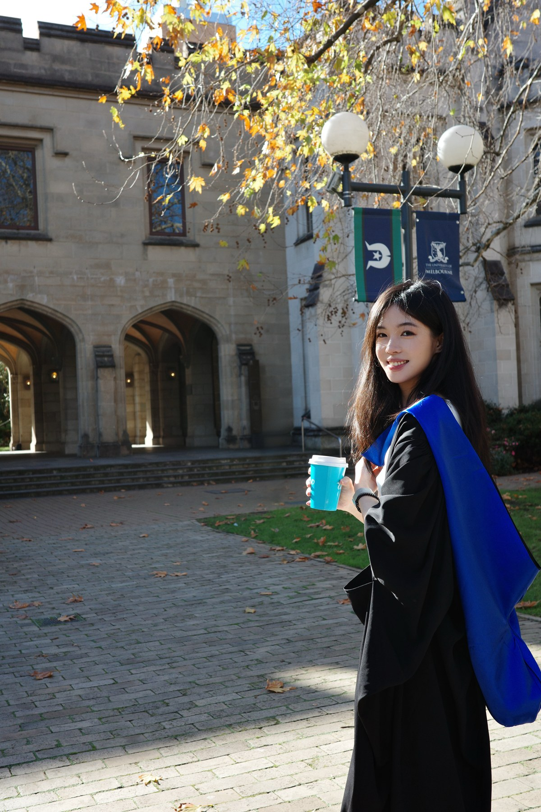

Meet Yihan
Journalism graduate · Content & tech

Melbourne graduate · Shanghai based24 years oldAlways up for new things Open to work worldwide
HI, I'M YIHAN
Marketing & social content for apps and AI products
I tell stories for apps and AI products, turning product features into social videos, ads and campaigns for international audiences.
With a master's in International Journalism from the University of Melbourne, I bring a storytelling approach to marketing, content growth and social media management.
I also work in user research — listening to people helps me make better content.
Journalism graduate · Content & tech

Melbourne graduate · Shanghai based02 / ABOUT ME
Social content, overseas growth and user research
I work across journalism, social media and user research. I develop ideas, write scripts, film and edit, then use audience feedback to improve the next piece
University of Melbourne
Master of International Journalism · 2024–2026
CapCut / Premiere / Canva / Photoshop / Procreate
03 / SAY HELLO